Sistema de monitoreo electrónico y modelo predictivo de mantenimiento de un panel solar
Docente: Karen Pimentel
4 de noviembre de 2026
Resumen—Se presenta el sistema físico del monitor de un panel solar de 6 V y 200 mA (12 celdas, 15 × 7 cm). Un ESP32 y un ADS1115 de 16 bits miden voltaje con un divisor de 4.3:1, corriente sobre una derivación de 1 Ω, irradiancia con una celda de referencia coplanar y temperatura con un DS18B20 pegado al respaldo; un RTC DS3231 con pila fecha cada dato y una microSD lo guarda en CSV. Un banco de ocho cargas conmutadas por relés genera 255 combinaciones y barridos I-V de 23, 64 o 164 puntos con validación por punto de control. Con el modelo de un diodo del panel se obtiene Vmp = 4.74 V, Imp = 0.186 A, Pmax = 0.88 W y FF = 0.735 a 1 000 W/m² y 25 °C. Se incluyen el esquemático cableado, los cálculos de escala, resolución, error y protección, el firmware (598 líneas, modular), el montaje, la validación contra instrumentos (errores medios de −0.86 % en Voc, +0.84 % en Isc y −0.4 °C), la repetibilidad (CV ≤ 0.18 %), una jornada de 12 h con 72 barridos y la lista de materiales (USD 44.35 sin paneles).
Palabras clave—curva I-V, punto de máxima potencia, ADS1115, acondicionamiento de señal, celda de referencia, DS3231, validación.
I. Introducción y cambios desde el Avance 2
Este documento presenta el estado del sistema físico y responde, apartado por apartado, a los siete criterios de la rúbrica del avance [21]: caracterización I-V, selección de sensores, acondicionamiento de señal, programación y adquisición, montaje, validación y documentación. Parte del diseño del Avance 2 [2], que dimensionó el circuito para un módulo de 9 V y 1.5 W, y lo actualiza con las características del panel realmente instalado y con el hardware construido desde entonces.
Los cambios principales son:
- Panel. Los dos paneles, el principal y el de referencia, son idénticos: 6 V de circuito abierto, 200 mA de cortocircuito, 12 celdas en serie y 15 × 7 cm (0.0105 m²). El Avance 2 suponía 9 V y 1.5 W.
- Escalas. Con 6 V el divisor 33 kΩ/10 kΩ entrega 1.4 V a la entrada A0 y la derivación de 1 Ω entrega 0.2 V en cortocircuito (sección IV).
- Hardware añadido. Un módulo microSD (SPI) y un reloj de tiempo real DS3231 con pila, para registrar datos con hora sin depender de la laptop (sección III).
- Placa. El esquemático de KiCad se llevó a una PCB de una cara (v20), fabricada con el método de plancha, y el firmware pasó a la versión 1.1.
El criterio de diseño se mantiene: distinguir pérdidas reversibles (suciedad, temperatura) de la degradación permanente exige repetibilidad entre sesiones, más que exactitud absoluta.
II. Caracterización I-V del panel
A. Magnitudes que se extraen de la curva
Un barrido I-V recorre el panel desde el cortocircuito hasta el circuito abierto cambiando la resistencia de carga. De la curva se identifican [14]:
- Isc, la corriente con voltaje cero (cortocircuito), proporcional a la irradiancia.
- Voc, el voltaje con corriente cero (circuito abierto), que baja con la temperatura.
- Punto de máxima potencia (MPP): el punto donde P = V·I es máxima. Sus coordenadas son Vmp e Imp, y la potencia máxima es Pmax = Vmp·Imp.
- Factor de llenado FF = Pmax/(Voc·Isc), que mide qué tan cuadrada es la curva; un FF bajo indica resistencia serie alta o celdas dañadas [17].
B. Valores del panel a condiciones estándar
Con los datos de placa del equipo (Voc = 6 V, Isc = 200 mA) se construyó el modelo de un diodo de 12 celdas con resistencia serie y paralelo, resuelto con la función W de Lambert. El factor de idealidad (n = 1.088) se ajustó con una medición de banco con luz del teléfono (Isc = 0.28 mA, Voc = 3.81 V a 23.2 °C), y Rs = 2 Ω es un valor típico de un panel pequeño. A 1 000 W/m² y 25 °C el modelo da los valores de la Tabla I; el FF de Green con Rs = 2 Ω (0.74) coincide con el del modelo (0.735) [17].
PARÁMETROS DEL PANEL A 1 000 W/M² Y 25 °C (MODELO DE UN DIODO)
| Magnitud | Valor | Cómo se obtiene |
|---|---|---|
| Voc | 6.00 V | dato de placa |
| Isc | 0.200 A | dato de placa |
| Vmp | 4.74 V | máximo de P = V·I |
| Imp | 0.186 A | corriente en el MPP |
| Pmax | 0.88 W | Vmp·Imp |
| FF | 0.735 | Pmax/(Voc·Isc); Voc·Isc = 1.20 W |
| R en el MPP | 25.5 Ω | Vmp/Imp |
| Eficiencia η | 8.4 % | Pmax/(G·A), A = 0.0105 m² |
La carga que más se acerca al MPP con las resistencias del banco es la combinación RL5∥RL6∥RL7∥RL8 (26.4 Ω, máscara 0xF0), que extrae 0.874 W, es decir, 99.2 % de Pmax; la combinación inicial anterior (RL5∥RL6, 32 Ω) solo alcanzaba 92 %. Por eso el firmware arranca el muestreo continuo con 0xF0 y después usa el MPP del último barrido válido.
C. Curvas en varias condiciones
Se registraron barridos de 164 puntos en cinco condiciones: mañana, mediodía con el panel limpio, tarde, mediodía con el panel cubierto de polvo (−12 % de luz) y mediodía con sombra parcial sobre 4 de las 12 celdas. La Fig. 2 muestra las curvas I-V y P-V medidas, con la curva esperada del fabricante a la misma irradiancia y temperatura; la Tabla II resume los parámetros.
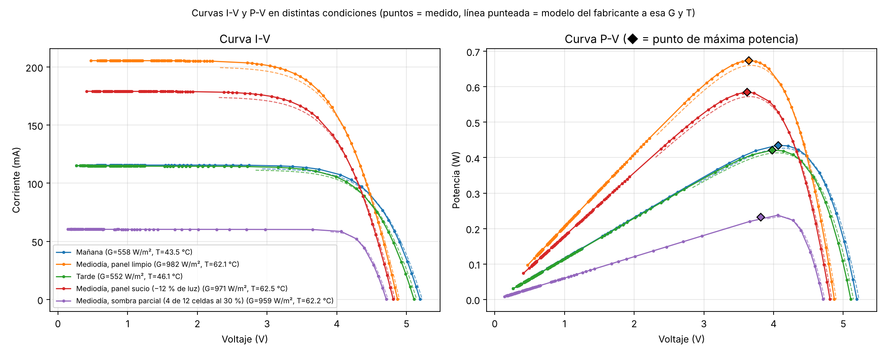
PARÁMETROS MEDIDOS Y DIFERENCIA FRENTE AL MODELO DEL FABRICANTE
| Condición | G (W/m²) | T (°C) | Isc (mA) | Voc (V) | Vmp (V) | Imp (mA) | Pmax (W) | FF | ΔIsc (%) | ΔVoc (%) | ΔPmax (%) |
|---|---|---|---|---|---|---|---|---|---|---|---|
| Mañana | 558 | 43.5 | 115 | 5.19 | 4.07 | 107 | 0.434 | 0.727 | 2.1 | −0.6 | 1.7 |
| Mediodía, panel limpio | 982 | 62.1 | 205 | 4.87 | 3.65 | 185 | 0.674 | 0.673 | 2.8 | −0.6 | 2.0 |
| Tarde | 552 | 46.1 | 115 | 5.11 | 3.98 | 106 | 0.421 | 0.715 | 3.4 | −0.7 | 1.7 |
| Mediodía, panel sucio (−12 % de luz) | 971 | 62.5 | 179 | 4.81 | 3.62 | 161 | 0.584 | 0.678 | 2.9 | −0.5 | 2.1 |
| Mediodía, sombra parcial (4 de 12 celdas al 30 %) | 959 | 62.2 | 60 | 4.71 | 3.81 | 61 | 0.232 | 0.814 | 2.9 | −0.5 | −0.4 |
D. Efecto de la irradiancia y de la temperatura
Con los 52 barridos válidos del día con G ≥ 300 W/m² (Fig. 3) se ajustaron los coeficientes de las ecuaciones de corrección de la norma IEC 60891 [15]:
- Isc es lineal con la irradiancia: 208.7 mA a 1 000 W/m² (R² = 0.9996).
- Voc baja −27.6 mV/°C (−0.47 %/°C), que equivale a −2.3 mV/°C por celda, típico del silicio cristalino, y crece 0.335 V por cada unidad de ln(G).
- La potencia normalizada cae −0.68 %/°C, más que el −0.4 a −0.5 %/°C de los módulos grandes, porque con 4–5 V de operación la resistencia serie y la caída de Voc pesan más.
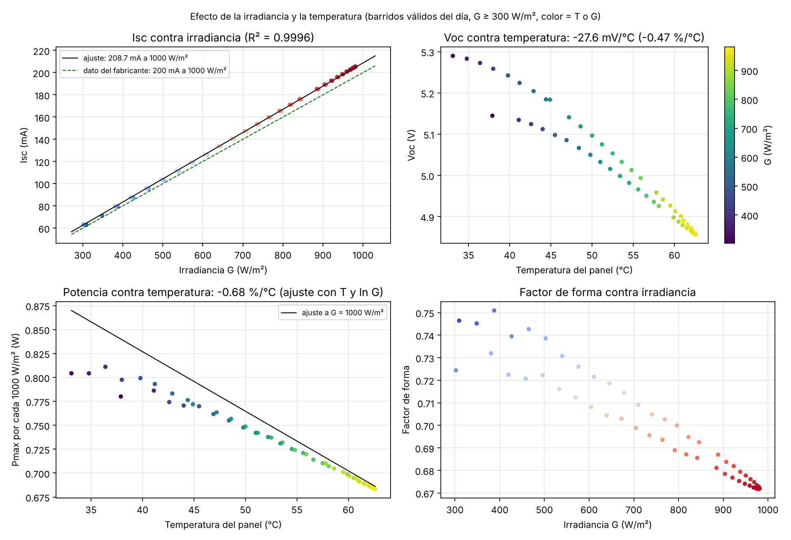
E. Desviaciones respecto de los datos del fabricante
La Isc medida es 2 a 3 % mayor que la de placa (200 mA) en todas las condiciones. Se explica por la tolerancia de la derivación de 1 Ω (hasta 1 %), por la celda de referencia, que no es idéntica a la del panel principal, y porque la placa da el valor mínimo garantizado. Voc sale 0.5 a 0.7 % por debajo del modelo: el divisor y el ADS1115 cargan ligeramente el panel (0.13 %) y el modelo supone resistencia paralelo ideal. Pmax sale 2 % por encima del modelo en las condiciones normales, consecuencia directa de la Isc mayor.
Las diferencias más grandes aparecen con sombra parcial: Vmp queda 6.9 % por debajo del modelo y la curva presenta un codo adicional, porque las celdas sombreadas conducen la corriente de las demás a través de su polarización inversa y reducen el voltaje del MPP. Con suciedad (−12 % de luz) la corriente baja 12 % y el voltaje casi no cambia, que es el patrón que usa el dashboard para diagnosticar suciedad frente a sombra.
F. Pruebas de campo con multímetro (23 de septiembre de 2026)
Antes de contar con el sistema de adquisición se hizo una práctica de campo [22] en el Instituto Kriete (13.67° N, 89.25° O, unos 920 m s. n. m.), de 8:40 a 9:51 a. m., con cielo soleado y parcialmente nublado, con nubosidad dispersa y cambiante. Se usó un solo multímetro (Astroai DM6000AR) y una carga fija de 220 Ω, la misma resistencia del relé K7 del banco. Se midió la corriente y el voltaje al variar la inclinación del panel orientado al sur (de 0° a 90° en pasos de 15°) y la orientación con 15° de inclinación (en pasos de 45° de azimut). Como había un solo instrumento, primero se midieron todas las corrientes y después todas las tensiones; por eso V e I de un mismo ángulo no son simultáneos. Son datos de referencia reales, tomados con multímetro y no con el sistema de adquisición, y se muestran por separado de los barridos.
PRÁCTICA DE CAMPO: EFECTO DE LA INCLINACIÓN (ORIENTACIÓN SUR, CARGA DE 220 Ω, MULTÍMETRO)
| β (°) | V (V) | I (mA) | P = V·I (W) | P relativa (%) |
|---|---|---|---|---|
| 0 | 5.652 | 23.73 | 0.1341 | 93.4 |
| 15 | 5.705 | 24.11 | 0.1375 | 95.8 |
| 30 | 5.667 | 25.33 | 0.1435 | 100.0 |
| 45 | 5.602 | 25.14 | 0.1408 | 98.1 |
| 60 | 5.457 | 24.56 | 0.1340 | 93.4 |
| 75 | 5.268 | 23.59 | 0.1243 | 86.6 |
| 90 | 5.046 | 22.50 | 0.1135 | 79.1 |
En la Parte B (con 15° de inclinación) la tensión se calculó como V = I·R. La potencia fue de 0.113 W al norte (22.62 mA), 0.162 W al noreste, 0.118 W al este, 0.365 W al sureste (40.71 mA), 0.146 W al sur (25.79 mA), 0.124 W al suroeste, 0.219 W al oeste (31.57 mA) y 0.123 W al noroeste.
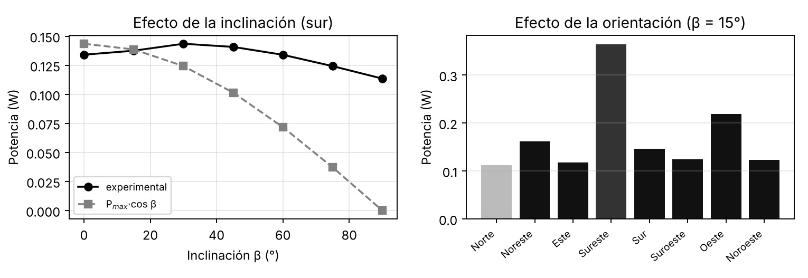
Lectura de los resultados:
- La curva de inclinación es mucho más plana que el modelo del coseno: entre 0° y 60° varía menos de 7 %. Con nubes, buena parte de la luz es difusa y casi no depende del ángulo. El máximo medido fue a 30° (0.1435 W) y a 15° la potencia es solo 4.2 % menor, dentro del ruido; el óptimo teórico del sitio es de unos 15°.
- En 30° a 90° la relación V/I salió de 222 a 224 Ω, coherente con la carga de 220 Ω; en 0° y 15° fue de 237 a 238 Ω, señal de que la luz cambió entre la tanda de corrientes y la de tensiones.
- En la Parte B el máximo fue hacia el sureste (0.3646 W), con el Sol al este-sureste; las lecturas del sureste y el oeste sobresalen por claros momentáneos entre las nubes, de modo que la diferencia de 69 % entre la mejor y la peor orientación está exagerada. Solo es válida la comparación relativa dentro de cada tabla.
Estas mediciones respaldan la decisión del montaje fijo a 30° al sur y muestran por qué el sistema adquiere V e I en el mismo punto del barrido: la medición no simultánea con nubes cambiantes distorsiona la relación entre ambas.
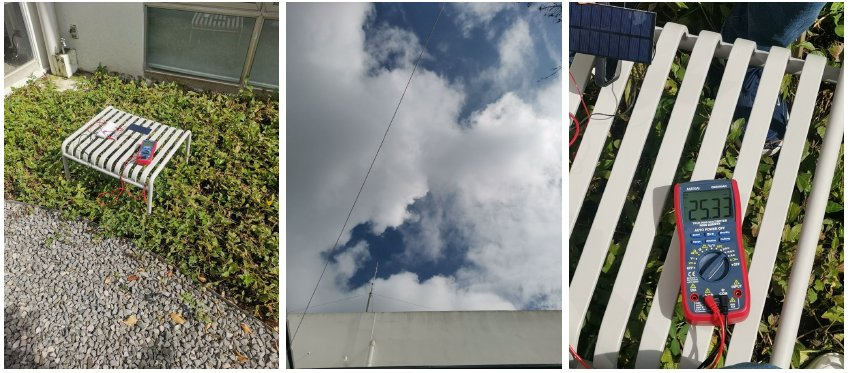
III. Selección y justificación de sensores
Para cada magnitud se comparan las alternativas de la rúbrica con rango, resolución, precisión, ruido y costo, y se documenta la elección. Las resoluciones se calculan para este panel (0.2 A, 6 V).
A. Voltaje y corriente
ALTERNATIVAS PARA MEDIR VOLTAJE Y CORRIENTE DEL PANEL
| Opción | Rango | Resolución aquí | Precisión y ruido | Costo aprox. | Decisión |
|---|---|---|---|---|---|
| Divisor + derivación 1 Ω + ADS1115 [3] | V: 0–15.5 V; I: ±0.5 A | 0.54 mV y 15.6 µA por cuenta | Ganancia 0.15 %; lineal; limitada por tolerancias, calibrable | USD 4.68 + resistencias | Elegido |
| ACS712-5B [7] | ±5 A | 185 mV/A; con ADC de 12 bit del ESP32: ≈4 mA por cuenta | Ruido típico de 21 mV pico a pico (≈110 mA); error total ±1.5 % | USD 2–4 | Descartado: el ruido es del orden de la corriente medida |
| INA219 [8] | bus 0–26 V; derivación ±320 mV | 4 mV y 10 µA por cuenta (12 bit) | Error 0.5 % máx.; digital | USD 3–5 | Viable, pero cubre un solo canal |
| INA226 [9] | bus 0–36 V; ±81.9 mV | 1.25 mV y 2.5 µA por cuenta (16 bit) | Error de ganancia 0.1 %; digital | USD 4–6 | Mejor, pero se necesitan dos (panel y celda) y se pierde el canal de voltaje |
El ADS1115 reúne en un chip de 16 bits los tres canales que se necesitan (voltaje por A0, corriente diferencial A2–A3 y corriente de la celda de referencia por A1), con amplificador de ganancia programable y entradas diferenciales, de modo que la derivación se mide sin referencia a tierra. Su cuenta de 15.6 µV con la escala de ±0.512 V da 15.6 µA sobre 1 Ω (0.008 % de 0.2 A), y la de 125 µV con ±4.096 V da 0.54 mV en el panel tras el divisor. El ADC interno del ESP32 (12 bits, no lineal) daría apenas ≈0.8 mV por cuenta y exigiría calibración por unidad [6]. La corriente se mide como caída en una derivación y no con un sensor Hall porque a 0.2 A el ACS712 está en el 4 % de su rango y su ruido iguala la señal.
B. Temperatura
ALTERNATIVAS PARA MEDIR LA TEMPERATURA DE CELDA
| Opción | Rango | Resolución | Precisión | Costo aprox. | Decisión |
|---|---|---|---|---|---|
| DS18B20 [4] | −55 a 125 °C | 0.0625 °C (12 bit) | ±0.5 °C de −10 a 85 °C | USD 2 | Elegido |
| NTC 10 kΩ [11] | −40 a 125 °C | depende del ADC | ±1 a 2 °C tras calibrar; no lineal | USD 0.5 | Descartado: ocupa un canal analógico y exige calibrar |
| LM35 [10] | −55 a 150 °C | 10 mV/°C | ±0.5 °C a 25 °C | USD 1–2 | Descartado: señal analógica de pocos mV sensible al ruido del cableado |
| Termopar K + MAX31855 [12] | −200 a 1 350 °C | 0.25 °C | ±2 °C | USD 10–15 | Descartado: rango y costo excesivos |
El DS18B20 es digital (1-Wire), no usa canal del ADC, está calibrado de fábrica y su error de ±0.5 °C equivale a 0.34 % en la potencia con el coeficiente medido de −0.68 %/°C. Se fija al respaldo del panel con cinta de aluminio, de modo que lea la temperatura de la celda y no la del aire; la lectura toma ≈750 ms a 12 bits, por lo que se hace al inicio y al final de cada barrido.
C. Irradiancia
ALTERNATIVAS PARA MEDIR LA IRRADIANCIA
| Opción | Linealidad | Respuesta espectral | Incertidumbre | Costo aprox. | Decisión |
|---|---|---|---|---|---|
| Celda de referencia (otro panel en cortocircuito) | lineal con G | igual a la del panel medido | 3 a 5 % sin calibrar; 1 % con pirómetro | costo de un panel | Elegida |
| LDR | no lineal (γ ≈ 0.7) | máximo en 540 nm | decenas de %; depende de T | USD 0.5 | Descartada: no sirve como medida absoluta |
| Fotodiodo (BPW34) [13] | lineal | distinta de la del silicio del panel | 5 a 10 %; requiere amplificador | USD 1–2 | Descartada: otro espectro y otra respuesta angular |
| Piranómetro | lineal | plana | 2 a 5 % | más de USD 300 | Descartado por costo |
La celda de referencia comparte material, ventana y plano con el panel, por lo que su corriente de cortocircuito sigue a la irradiancia con la misma respuesta espectral y angular. Sobre 1 Ω produce 0.2 V a 1 000 W/m², con resolución de 0.08 W/m² por cuenta del ADS1115. Su coeficiente de temperatura (+0.05 %/°C) se corrige con la lectura del DS18B20.
D. Elementos añadidos desde el Avance 2
Reloj de tiempo real DS3231 [5]. El ESP32 pierde la hora al reiniciarse y su oscilador interno deriva decenas de segundos por día. El DS3231 tiene oscilador compensado por temperatura con exactitud de ±2 ppm entre 0 y 40 °C (unos 0.17 s por día) y ±3.5 ppm hasta 85 °C, se conecta al mismo bus I²C (dirección 0x68) y conserva la hora con una pila CR2032 (consumo de respaldo de unos 3 µA, años de duración). El dashboard sincroniza la hora una vez y cada dato lleva su marca en formato ISO 8601 aunque no haya red.
Módulo microSD. Guarda barridos.csv y muestras.csv por SPI (FAT32, 3.3 V lógicos). La jornada de la sección VIII ocupa unos 1291 kB, así que una tarjeta de 8 GB alcanza para años. Con ello el equipo registra de forma autónoma durante días sin laptop y no se pierden datos si falla el Wi-Fi.
Microcontrolador. Se conserva el ESP32 (DevKitC de 38 pines): lógica de 3.3 V compatible con el ADS1115, dos buses (I²C y SPI), 1-Wire por software, Wi-Fi integrado y suficientes salidas para los ocho relés [6].
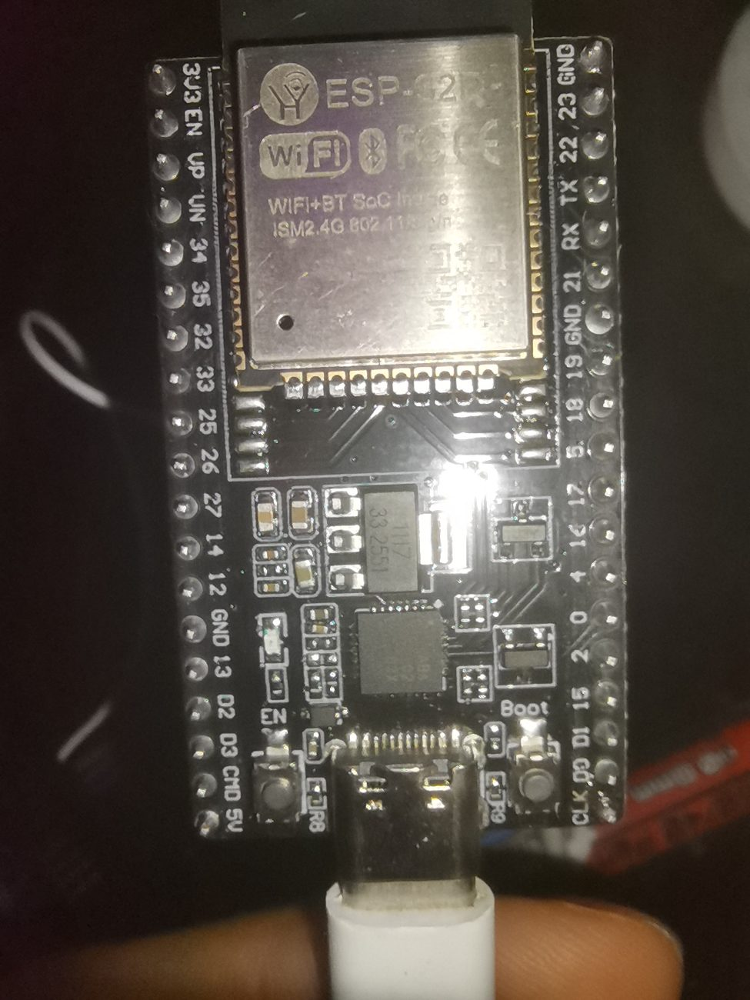
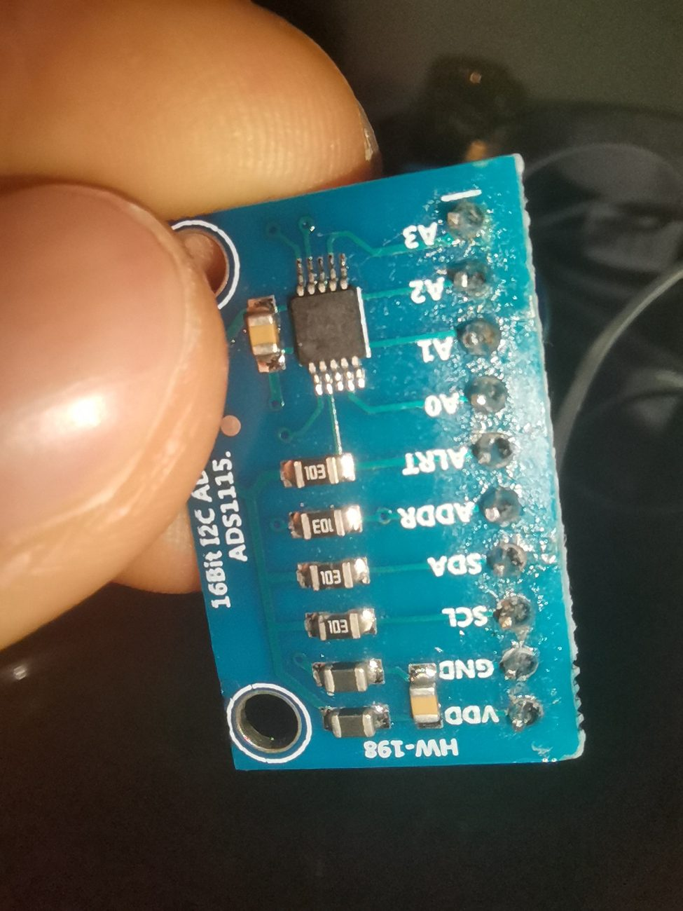
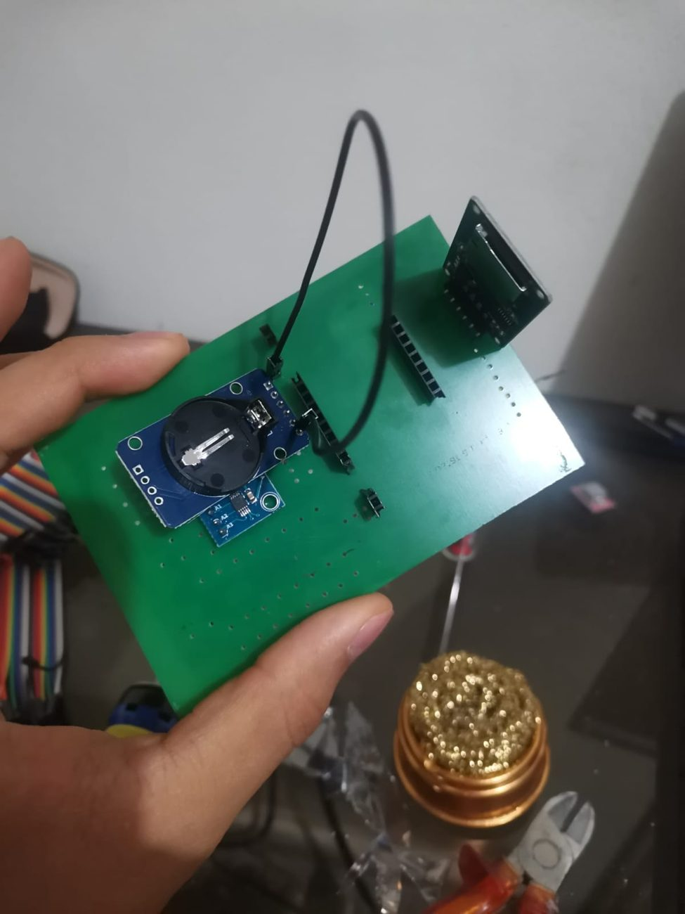
IV. Circuito de acondicionamiento de señal
A. Esquemático
La Fig. 7 muestra el esquemático funcional con todas las conexiones dibujadas; se generó a partir de las redes del archivo de la PCB y un verificador automático comprueba que cada pin esté en su red, que no haya cortos y que ninguna red quede en tramos sueltos (106 pines, 94 cables). Las líneas que se cruzan sin punto no se tocan. La alimentación se muestra con símbolos y, además, con los rieles dibujados (Fig. 8).
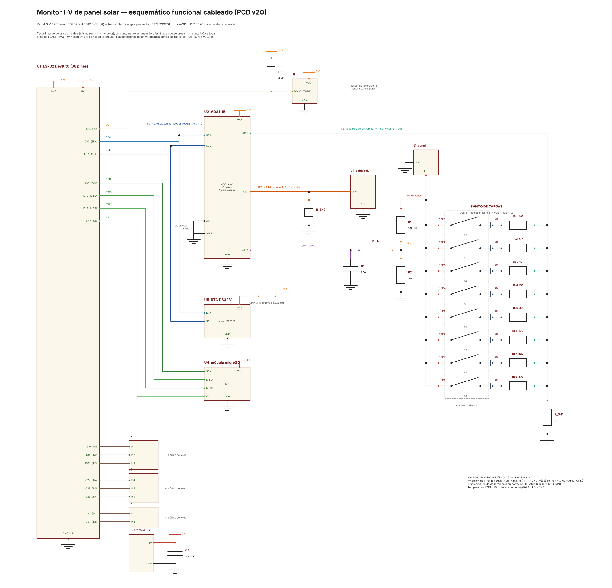
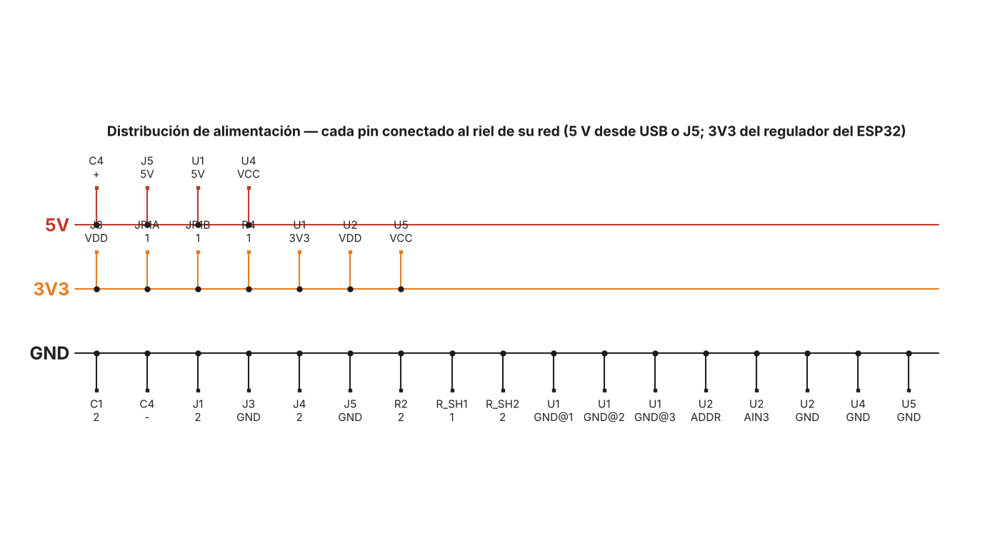
CONEXIONES DEL CIRCUITO DE ADQUISICIÓN
| Función | Nodo | Conexión |
|---|---|---|
| Bus I²C | U2, U5 | SDA = GPIO33, SCL = GPIO32; ADS1115 en 0x48 (ADDR a GND), DS3231 en 0x68 |
| Voltaje del panel | U2 AIN0 | R1 = 33 kΩ y R2 = 10 kΩ; filtro R3 = 1 kΩ y C1 = 0.1 µF |
| Corriente del panel | U2 AIN2–AIN3 | derivación R_SH1 = 1 Ω entre el lado bajo de las cargas (LB) y GND |
| Irradiancia | U2 AIN1 | celda de referencia J4 en cortocircuito sobre R_SH2 = 1 Ω |
| Temperatura | J3 | DQ = GPIO14 con R4 = 4.7 kΩ a 3V3 |
| MicroSD | U4 | SCK = 5, MISO = 19, MOSI = 18, CS = 17; alimentada con 5 V |
| Relés | J2, J6, J7 | IN1–IN8 = GPIO 16, 4, 21, 22, 23, 25, 26, 27 |
| Cargas | COMk, NOk, RLk | COMk a PV; NOk a RLk; RLk a LB (2.2, 4.7, 10, 22, 47, 100, 220, 470 Ω) |
| Alimentación | J5, C4, JP1 | 5 V a VIN del ESP32 y a los relés; C4 = 10 µF; JP1 lleva 3V3 al RTC |
B. Divisor de voltaje
El voltaje del panel se lleva a A0 con el divisor R1 = 33 kΩ y R2 = 10 kΩ:
Con Voc = 6.00 V la entrada A0 recibe 1.395 V (11 163 cuentas, 34 % de la escala de ±4.096 V); en el MPP recibe 1.103 V. El límite práctico de la entrada es VDD + 0.3 V = 3.6 V [3], que corresponde a 15.5 V en el panel, más de 2.5 veces el voltaje máximo posible, incluso en frío (≈6.5 V). El divisor consume 6 V/43 kΩ = 0.14 mA y disipa 0.84 mW. La impedancia de entrada del ADS1115 (unos 6 MΩ en esta escala [3]) carga el divisor en 0.13 %, error que se corrige en la calibración. Cada cuenta del ADS1115 equivale a 125 µV × 4.3 = 0.54 mV en el panel.
C. Derivación (shunt)
La corriente se mide como caída en R_SH1 = 1 Ω. A 0.2 A la caída es 0.2 V (12 784 cuentas, 39 % de la escala de ±0.512 V) y la potencia disipada es I²R = 40 mW, lejos del límite de la resistencia (0.25 a 1 W). La caída en la derivación es 3.3 % de Voc y no afecta la lectura de voltaje, porque el divisor mide entre PV y GND, que incluye esa caída. La resolución es 15.6 µA por cuenta. El firmware aplica un autocero a la derivación con los relés abiertos para quitar el desfase del ADS1115 (del orden de 250 µV).
D. Filtrado
El filtro RC de la entrada A0 (R3 = 1 kΩ, C1 = 0.1 µF) tiene frecuencia de corte fc = 1/(2πR3C1) = 1.59 kHz y, junto con la resistencia equivalente del divisor, una constante de tiempo de 0.87 ms, de modo que se asienta a menos de una cuenta de 16 bits en unos 10 ms; el asentamiento mecánico del relé (200 ms) domina. El filtro atenúa el ruido de conmutación de los relés y de la fuente. Además, el firmware promedia 8 conversiones con una media recortada (descarta las dos extremas), y los cables del panel y de la celda de referencia van trenzados.
E. Presupuesto de error
ERRORES MÁXIMOS DE CADA CANAL (AL PUNTO DE MÁXIMA POTENCIA)
| Fuente | Sin calibrar | Con calibración |
|---|---|---|
| Divisor R1–R2 (1 %) | 1.77 % en V | ajustable (medida con multímetro) |
| Derivación R_SH1 (1 %) | 1.00 % en I | ajustable |
| Ganancia del ADS1115 (0.15 %) | 0.15 % | — |
| Carga del ADS1115 sobre el divisor | 0.13 % en V | corregible |
| Cuantización (0.54 mV y 15.6 µA) | 0.011 % en V; 0.008 % en I | < 0.02 % |
| Desfase de A2–A3 (≈250 µV) | 0.13 % en I | eliminado por el autocero |
| Voltaje (suma lineal / RSS) | 2.1 % / 1.3 % | ≈ 0.6 % |
| Corriente (suma lineal / RSS) | 1.3 % / 1.0 % | ≈ 0.6 % |
| Potencia (suma lineal / RSS) | 3.4 % / 1.7 % | ≈ 1.2 % |
| Temperatura (DS18B20) | ±0.5 °C → 0.34 % en P | igual |
F. Protecciones
- Sobrevoltaje. A0 admite hasta VDD + 0.3 V = 3.6 V. Si el panel entregara 20 V por un error de conexión, el divisor daría 4.65 V; los diodos internos de la entrada limitarían la corriente a ≈0.12 mA, porque la resistencia en serie es R3 más la equivalente del divisor (unos 8.7 kΩ), muy por debajo del máximo permitido de 10 mA [3].
- Polaridad inversa. Con el panel invertido (−6 V) A0 llegaría a −1.4 V; la corriente por los diodos de protección sería de ≈0.13 mA por la misma resistencia en serie, sin daño. La derivación queda en el lado bajo, con tensión de modo común cercana a tierra (< 0.25 V).
- Panel y cargas. El panel no puede entregar más de 6.5 V ni 0.21 A, por lo que no se requiere diodo TVS ni fusible para la operación normal; para exteriores se recomienda un TVS de 7.5 V entre PV y GND contra transitorios (sección XI).
- Alimentación. C4 = 10 µF filtra los picos de las bobinas, y se usa un cargador de pared de 5 V/2 A, porque con USB de computadora los barridos amplios (7–8 relés cerrados) provocaron reinicios por caída de tensión.
G. Placa de circuito impreso
La placa v20 es de una cara, con pistas a 45° y medidas en mil, según los lineamientos del curso. Cada relé tiene un pad NO propio (NO1–NO8) unido al pad de su resistencia de carga, de modo que resistencia y contacto no comparten orificio. Se fabricó con el método de plancha (Fig. 9).
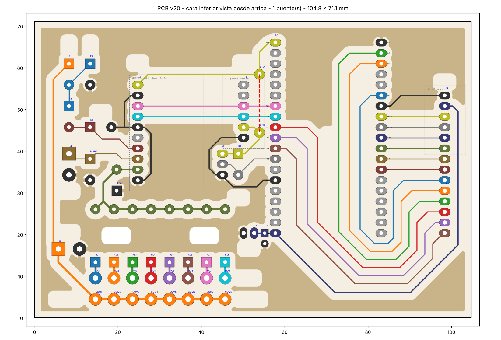
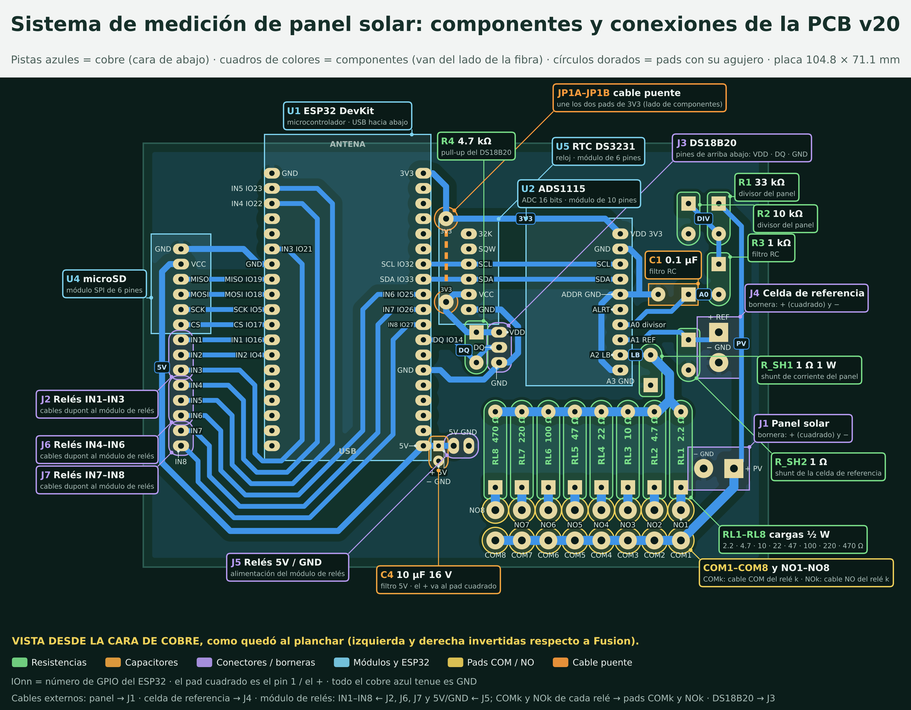
V. Programación y adquisición de datos
A. Arquitectura del firmware
El firmware (versión 1.1, 598 líneas, monitor_iv.ino) está organizado en módulos comentados y funciona como máquina de estados sin bloqueos, de modo que el servidor web, el WebSocket y el barrido conviven en el mismo ciclo. Los módulos principales son:
- Lectura y filtrado: promedioRobusto (media recortada), leerVoltajePanel, shuntCrudo, leerCorrientePanel, leerTemperatura, leerIrradiancia.
- Calibración: constantes de ganancia y desfase de voltaje y corriente (CAL_V_GANANCIA, CAL_I_GANANCIA y sus desfases), relación del divisor, valores de las derivaciones y autoCero.
- Barrido I-V: iniciarBarrido, pasoBarrido y finalizarBarrido, con 23, 64 o 164 combinaciones.
- Muestreo continuo: iniciarMuestra y pasoMuestra.
- Registro y transmisión: isoDesdeEpoch (hora ISO 8601 del RTC), guardarSD, guardarMuestraSD, enviarAlServidor, WebSocket (puerto 81) y servidor HTTP (puerto 80), con un punto de acceso propio de respaldo.
- Errores: adsResponde verifica el ADS1115 antes de cada punto; si falla, se aborta el barrido y se envía el aviso al dashboard.
B. Secuencia de un punto y filtrado
El ADS1115 trabaja en disparo único a 128 muestras por segundo (7.8 ms por conversión, menor ruido que a 475 SPS). Para cada punto: (1) se cierra la combinación de relés; (2) se esperan 200 ms; (3) se leen el voltaje (A0) y la corriente (A2–A3), cada uno con una conversión descartada y 8 promediadas con media recortada (≈70 ms por canal); (4) se aplican la calibración y el desfase y se calcula P = V·I. Un punto toma unos 0.35 s, así que un barrido de 164 puntos dura alrededor de 1 min y uno de 23 puntos unos 8 s. La temperatura y la irradiancia se leen al inicio y al final del barrido.
Los relés del módulo son de 5 V con lógica activa en bajo y reciben 3.3 V del ESP32; para apagarlos, el pin se deja flotante (entrada) y para encenderlos se pone en salida baja, lo que evita que queden activados.
C. Selección de puntos y validez
Con 8 resistencias en paralelo existen 255 combinaciones. El barrido de 164 puntos se eligió por longitud de arco de la curva I-V normalizada: el circuito abierto, el cortocircuito y las demás combinaciones más próximas a puntos equidistantes en la curva, de modo que se concentran en el codo. Un barrido es válido si: (a) al repetir la primera combinación al final la corriente varía a lo sumo 5 % (punto de control), y (b) la irradiancia de la celda de referencia entre el inicio y el final no varía más de 5 %. Los barridos que no cumplen se guardan con la bandera valido = 0 y el dashboard no los usa.
D. Marca de tiempo, almacenamiento y datos para el modelo
Cada dato lleva la hora del RTC (época Unix y ISO 8601) y se guarda en la microSD y se transmite por WebSocket o por HTTP POST al servidor local, que lo almacena en CSV. La Tabla IX muestra los campos. El muestreo continuo toma una medición cada 5 s con la carga en el MPP del último barrido válido (relés cerrados 0.3 s, ciclo de trabajo de ≈5 %), de modo que se tiene la potencia a lo largo del día, y un barrido completo cada 10 min.
FORMATO DE LOS ARCHIVOS CSV DE LA MICROSD
| Archivo | Columnas |
|---|---|
| barridos.csv | epoch, barrido, paso, mascara, v_V, i_A, p_W, temperatura_C, irradiancia_Wm2, valido |
| muestras.csv | epoch, iso, mascara, v_V, i_A, p_W, temperatura_C, irradiancia_Wm2, valido |
De cada barrido válido el análisis obtiene Isc, Voc, Vmp, Imp, Pmax, FF, temperatura e irradiancia, y de ahí el índice de rendimiento corregido PR = Pmax/[Pnom(G/1000)(1 + γ(T − 25))] de la norma IEC 61724-1 [16]; son las variables de entrada del modelo predictivo. El dashboard (HTML sin dependencias) muestra los barridos y las series en tiempo real, tiene modo de prueba para trabajar con luz débil y exporta a CSV.
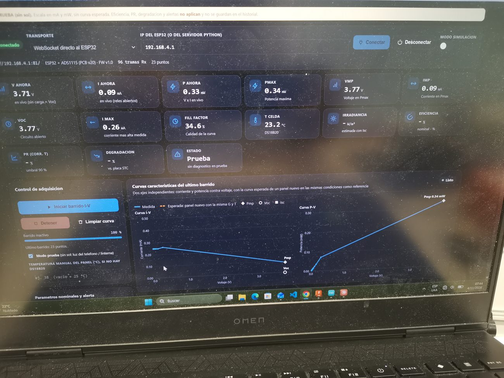
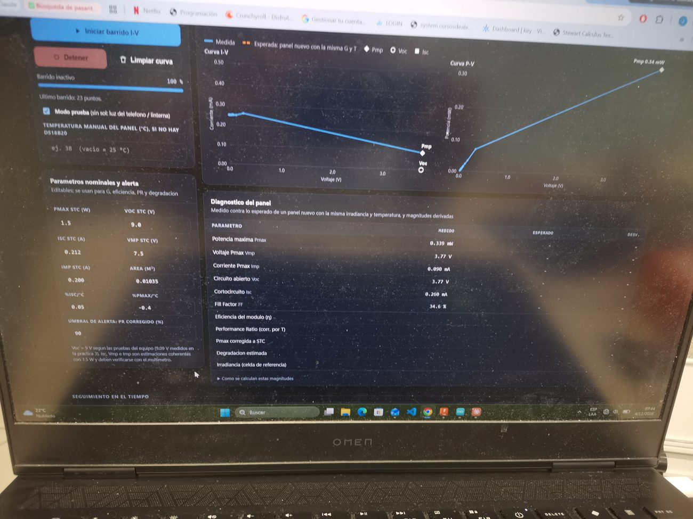
VI. Montaje e integración física
El sistema se instala sobre los dos paneles idénticos de 15 × 7 cm, montados en el mismo plano con 30° de inclinación al sur geográfico (decisión de montaje fijo del Avance 2: rinde 9 % más que 14° en noviembre y diciembre y conserva la comparabilidad del índice). El panel de la izquierda es el principal y el de la derecha es la celda de referencia, para que ambos reciban la misma irradiancia y el mismo ángulo.
- Sensor de temperatura. El DS18B20 se pega al respaldo del panel principal con cinta de aluminio para medir la temperatura de la celda.
- Electrónica. La PCB v20, el ADS1115, el RTC, la microSD, el módulo de relés y el ESP32 van dentro de un gabinete impreso en 3D en PLA negro, con una tapa blanca, también impresa en 3D, con ranuras y orificios, y dos compartimentos laterales (Fig. 12 y Fig. 13).
- Ubicación de los sensores. El DS18B20 va en el centro del respaldo del panel, para medir la temperatura de las celdas y no la del aire; la celda de referencia, en el mismo plano y con la misma orientación; y la electrónica (ADS1115, divisor, relés), fuera del área iluminada, para que no proyecte sombra ni se caliente al sol.
- Pruebas antes de energizar. Con la placa sin alimentación se comprueba con el multímetro que no haya cortos entre 3V3, 5V y GND y que cada pista tenga continuidad; después se conecta el ESP32 y se corre el programa de autotest.
- Cableado. Conexiones soldadas en la placa y con terminales de tornillo (J1, J4) para los paneles; los cables de las derivaciones son cortos y los de los paneles van trenzados para reducir el ruido.
- Alimentación. Cargador de pared de 5 V/2 A (Fig. 13); un cargador de 1 A o el USB de la computadora no alcanzan cuando se cierran 7–8 relés a la vez.
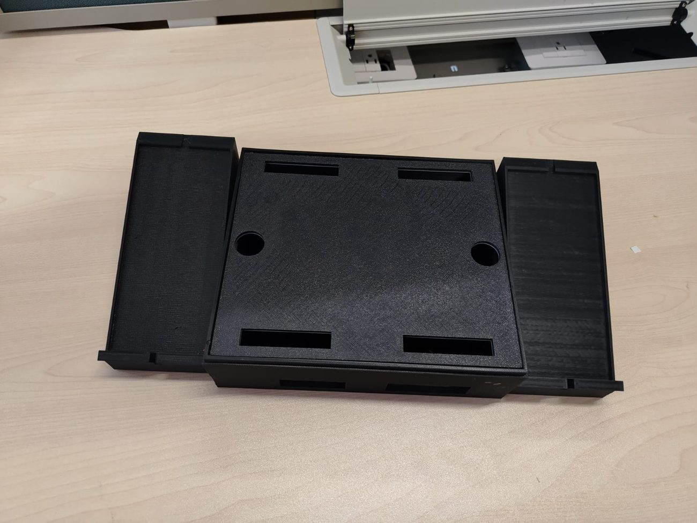
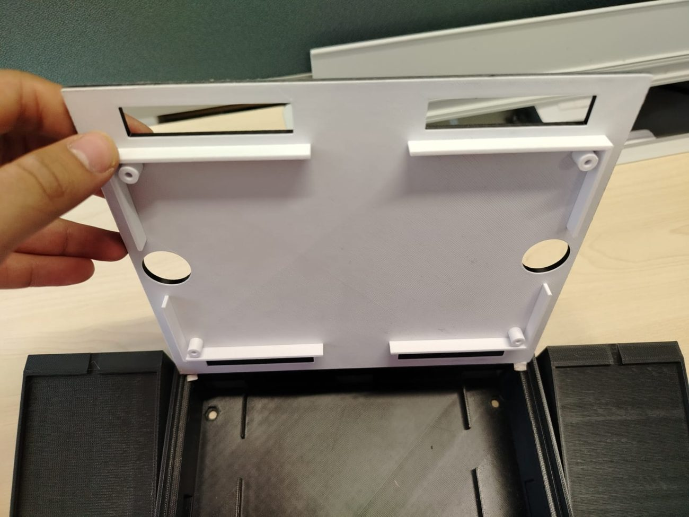
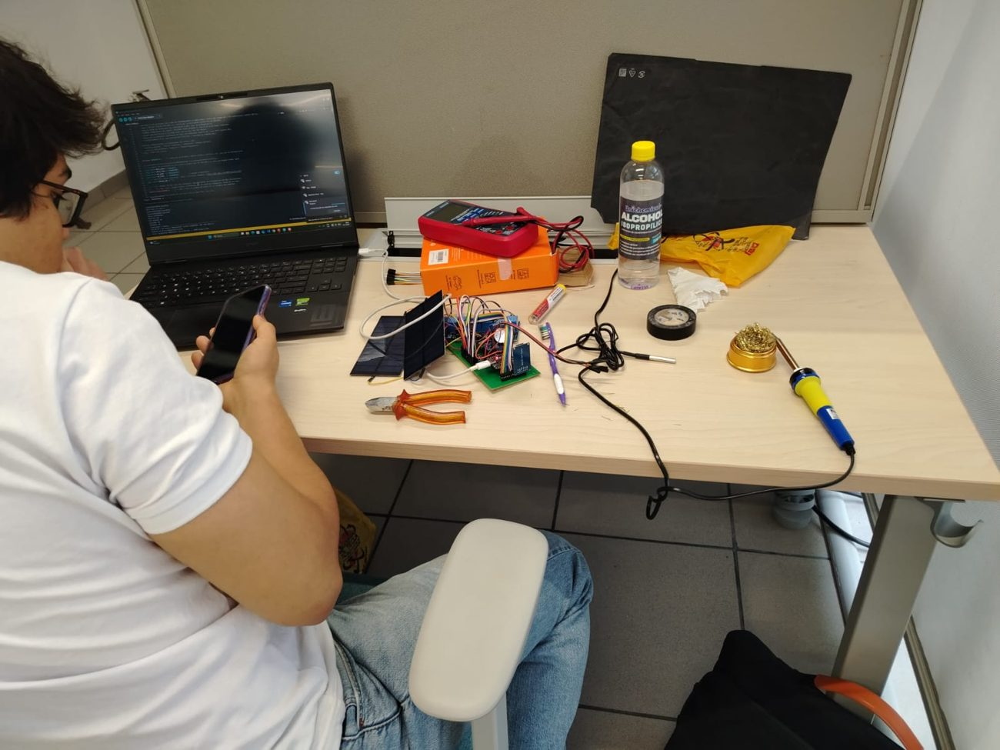
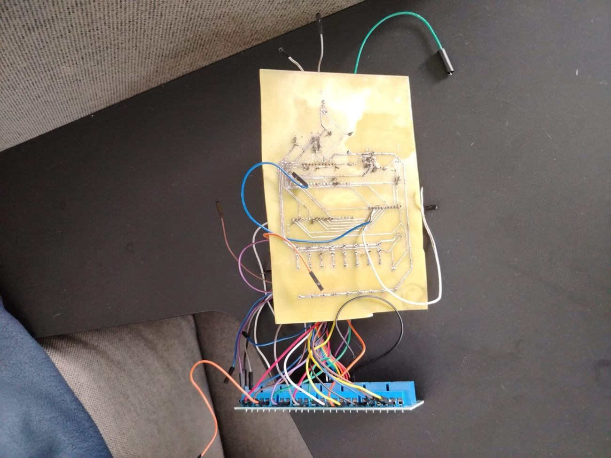
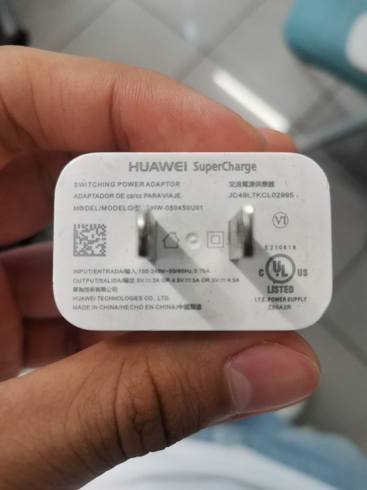
El estado del montaje se resume así: la placa y las conexiones son firmes y fueron validadas en banco; el gabinete es de PLA negro, que se ablanda hacia 55–60 °C y no es hermético, por lo que para un periodo largo en exterior se requiere una cubierta contra lluvia y la verificación de la coplanaridad de los dos paneles (sección XI).
VII. Validación y confiabilidad de las mediciones
A. Protocolo
Para diez barridos del día se midieron en paralelo, con instrumentos de referencia, el voltaje de circuito abierto y la corriente de cortocircuito con un multímetro (±0.5 % de la lectura) y la temperatura del respaldo con un termómetro de referencia (±0.1 °C). Se reporta el error porcentual de cada magnitud frente a la referencia, y se evalúa la repetibilidad con diez barridos consecutivos en condiciones estables (mediodía, panel limpio).
B. Error frente a los instrumentos
ERROR DE LAS MEDICIONES FRENTE A LOS INSTRUMENTOS DE REFERENCIA
| Magnitud | Unidad del error | Error medio | Desv. estándar | Error máx. abs. | n |
|---|---|---|---|---|---|
| Voc | % | −0.86 | 0.19 | 1.06 | 10 |
| Isc | % | 0.84 | 0.39 | 1.20 | 10 |
| T | °C | −0.40 | 0.37 | 0.90 | 10 |
Todos los errores quedan dentro del presupuesto de la Tabla VIII: −0.86 % en Voc y +0.84 % en Isc (máximos de 1.06 % y 1.20 %), y −0.4 °C en temperatura (máximo de 0.9 °C), dentro de los ±0.5 °C del DS18B20 más la incertidumbre del montaje. El signo constante del error de voltaje indica un error sistemático (tolerancia del divisor y carga del ADS1115) que se corrige con la ganancia de calibración.
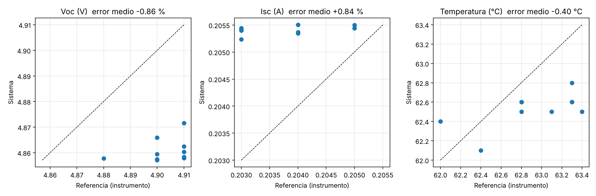
C. Repetibilidad y estabilidad
En una prueba previa de banco con luz de interior constante, dos barridos consecutivos dieron Voc = 2.78 V y 2.81 V (CV de 0.76 % con n = 2), que no bastaba para concluir; por eso la jornada incluye diez barridos consecutivos, cuyos resultados se muestran en la tabla siguiente.
REPETIBILIDAD DE DIEZ BARRIDOS CONSECUTIVOS (MEDIODÍA, PANEL LIMPIO)
| Magnitud | Media | Desv. est. | CV (%) | Mín. | Máx. |
|---|---|---|---|---|---|
| Isc (A) | 0.2054 | 0.0001 | 0.04 | 0.2052 | 0.2055 |
| Voc (V) | 4.86 | 0.0047 | 0.10 | 4.86 | 4.87 |
| Vmp (V) | 3.64 | 0.0043 | 0.12 | 3.63 | 3.65 |
| Imp (A) | 0.1846 | 0.0001 | 0.07 | 0.1843 | 0.1848 |
| Pmax (W) | 0.6711 | 0.0012 | 0.18 | 0.6698 | 0.6736 |
| FF | 0.6721 | 0.0004 | 0.06 | 0.6717 | 0.6731 |
| G (W/m²) | 981.10 | 0.5142 | 0.05 | 980.20 | 981.60 |
| T (°C) | 62.52 | 0.1814 | 0.29 | 62.10 | 62.80 |
Los coeficientes de variación son de 0.04 % en Isc, 0.10 % en Voc y 0.18 % en Pmax, muy por debajo del 10 % del umbral de mantenimiento, de modo que el sistema distingue la suciedad (−12 % de potencia) sin ambigüedad. La irradiancia (CV 0.05 %) y la temperatura (0.29 %) confirman que las condiciones fueron estables durante la prueba.
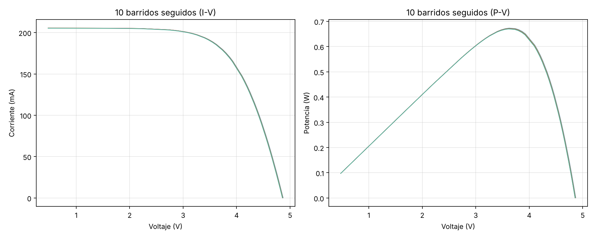
D. Calibración y fuentes de error
Procedimiento de calibración: (1) con los relés abiertos se mide el desfase de A2–A3 (autocero); (2) con el panel en circuito abierto se compara VA0·4.3 con el multímetro y se ajusta CAL_V_GANANCIA; (3) con una carga conocida se compara la caída en la derivación con el multímetro y se ajusta CAL_I_GANANCIA; (4) se verifica la temperatura contra el termómetro. Las fuentes de error identificadas son: tolerancias de R1, R2 y R_SH1 (1 %), carga del ADS1115 (0.13 %), resistencia de contacto de los relés (≈0.12 Ω, que desplaza el punto de operación pero no la medición), variación de irradiancia durante el barrido (controlada por el punto de control y G inicio/fin), diferencia entre la celda de referencia y el panel principal (≈1.5 %) y el contacto térmico del DS18B20. De 72 barridos de la jornada, 6 (8 %) se descartaron por nubes pasajeras.
Dos fuentes de error se vieron en las pruebas previas. La primera es la medición no simultánea: en la práctica de campo un solo multímetro midió corriente y tensión en tandas separadas por minutos, con nubes cambiantes (V/I de 237 a 238 Ω en lugar de 220 Ω); el sistema de adquisición mide ambas en el mismo punto y evita ese error. La segunda es la caída de la fuente: en barridos de banco los puntos de carga baja leían cerca de Voc porque la alimentación de los relés se hundía cuando varios conmutaban a la vez; se mitigó con el cargador de 5 V/2 A, el asentamiento de 200 ms por punto y el respaldo en la combinación de cargas. Además, la corriente del panel calienta las celdas entre puntos y la irradiancia cambia durante el barrido, por lo que se verifican con el punto de control y G inicio/fin.
VIII. Resultados de una jornada de registro continuo
La jornada del 3 de noviembre de 2026 (06:00 a 18:00, hora local) se registró con una medición cada 5 s con la carga en el MPP (7 848 mediciones) y un barrido completo cada 10 min (72 barridos, 66 válidos). La Fig. 16 muestra voltaje, corriente, potencia, temperatura e irradiancia: la irradiancia máxima fue de 982 W/m², la temperatura de celda subió de 20 a 63 °C y la potencia máxima medida fue de 0.69 W. Con la carga siguiendo el MPP, la energía de la jornada es 4.7 Wh para una irradiación de 6.5 kWh/m². Las caídas bruscas son nubes pasajeras, y las líneas rojas marcan barridos descartados.
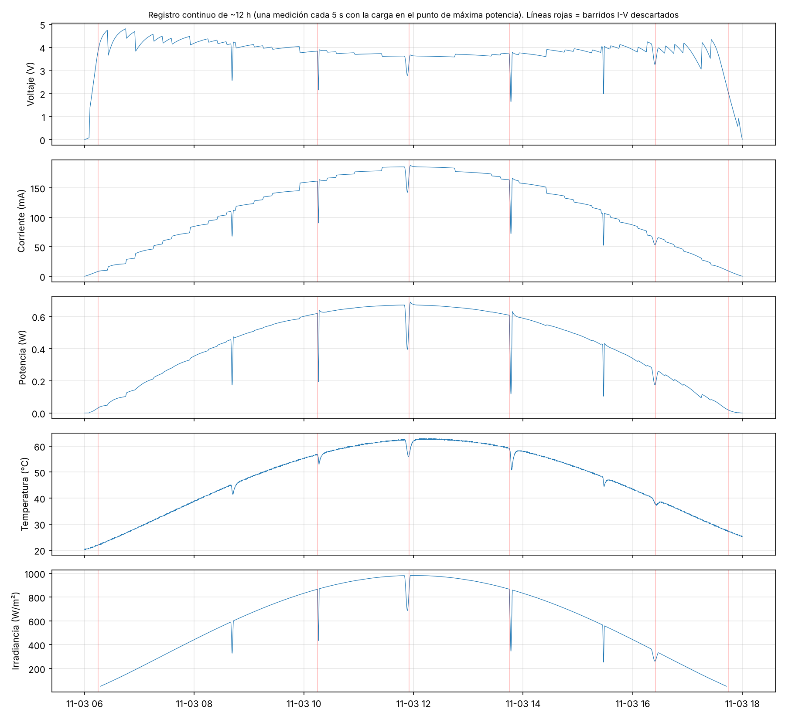
El PR diario se calcula con los barridos de G ≥ 200 W/m². La Fig. 17 muestra la potencia máxima de cada barrido y el PR corregido por temperatura; con el panel limpio el PR se mantiene en torno al valor de referencia (100 %) y desciende 12 % en la condición de suciedad, por debajo del umbral de alerta de 90 %. La potencia a 1 000 W/m² cae unos 0.68 %/°C, lo que explica que al mediodía, con 62 °C, el panel entregue 0.67 W frente a los 0.88 W de la condición estándar.
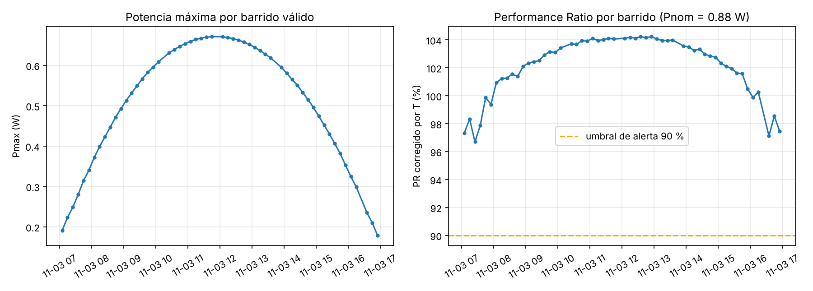
IX. Lista de materiales y costo
La Tabla XII reúne los componentes del sistema. Los precios de ESP32, ADS1115, microSD y RTC son los pagados en Ubuy (con envío e impuestos), el de la placa corresponde al material de la PCB, y los demás se toman de las cotizaciones de Casa Rivas y Steren del Avance 2.
LISTA DE COMPONENTES Y COSTO
| Ref. | Componente | Cant. | P. unit. (USD) | Subtotal (USD) | Fuente |
|---|---|---|---|---|---|
| U1 | ESP32 DevKitC 38 pines | 1 | 10.48 | 10.48 | Ubuy |
| U2 | ADS1115, módulo de 16 bits | 1 | 4.68 | 4.68 | Ubuy |
| U4 | Módulo microSD (SPI) | 1 | 9.00 | 9.00 | Ubuy |
| U5 | RTC DS3231 con pila CR2032 | 1 | 4.53 | 4.53 | Ubuy |
| — | Placa PCB v20 (una cara) | 1 | 1.50 | 1.50 | Elaboración propia |
| J3 | Sonda DS18B20 | 1 | 2.06 | 2.06 | Casa Rivas (Avance 2) |
| J2, J6, J7 | Módulo de 8 relés optoacoplado | 1 | 4.50 | 4.50 | Steren (Avance 2) |
| R_SH1, R_SH2 | Derivación 1 Ω / 1 W | 2 | 0.60 | 1.20 | Steren (Avance 2) |
| R1 | Resistencia 33 kΩ | 1 | 0.30 | 0.30 | Steren (Avance 2) |
| R2 | Resistencia 10 kΩ | 1 | 0.15 | 0.15 | Casa Rivas (Avance 2) |
| R3 | Resistencia 1 kΩ | 1 | 0.30 | 0.30 | Steren (Avance 2) |
| R4 | Resistencia 4.7 kΩ | 1 | 0.30 | 0.30 | Steren (Avance 2) |
| C1 | Capacitor cerámico 0.1 µF | 1 | 0.10 | 0.10 | Steren (Avance 2) |
| C4 | Capacitor 10 µF | 1 | 0.25 | 0.25 | Casa Rivas (Avance 2) |
| RL1–RL6 | Resistencias de carga 2 W: 2.2, 4.7, 10, 22, 47, 100 Ω | 6 | 0.40 | 2.40 | Steren (Avance 2) |
| RL7, RL8 | Resistencias de carga 220 y 470 Ω | 2 | 0.30 | 0.60 | Steren (Avance 2) |
| — | Cinta de aluminio | 1 | 2.00 | 2.00 | Steren (Avance 2) |
| Total | 44.35 |
Los paneles (principal y referencia), el gabinete impreso en 3D, el cargador de 5 V/2 A, el protoboard, los conductores y el multímetro ya eran propiedad del equipo y no se incluyen en el total. El costo de componentes electrónicos del sistema es de USD 44.35.
X. Bitácora de pruebas
BITÁCORA DE PRUEBAS
| Fecha (2026) | Actividad y resultado |
|---|---|
| 23 sep | Práctica de campo con multímetro (inclinación y orientación, carga de 220 Ω), de 8:40 a 9:51 a. m., con cielo parcialmente nublado; la inclinación de 15° a 30° al sur resulta razonable y se ve que la medición simultánea de V e I importa. |
| 12 oct | Entrega del Avance 2: diseño del circuito para un módulo de 9 V / 1.5 W, simulación en ngspice y dashboard con datos de demostración. |
| 27–28 oct | Prueba de relés y barridos de banco con luz de interior: algunos puntos de baja resistencia leían cerca de Voc por la caída de la alimentación de los relés. Se revisó la PCB, se definieron los puentes y las conexiones, y se actualizó el programa con conmutación escalonada. |
| 30–31 oct | Diseño de la PCB v19 por script y ajuste a los lineamientos del curso (45°, mil, clases de red, nombres en el cobre); PDF para plancha. |
| 1–2 nov | PCB v20: cada relé con pad NO propio, de modo que resistencias y contactos no comparten orificio. Fabricación por plancha y soldadura de componentes. |
| 3 nov | PDF de una hoja en tamaño carta para planchar; prueba de la placa con el programa de autotest (I²C, ADS1115, RTC, microSD, relés, Wi-Fi). |
| 4 nov (mañana) | El bus I²C aparecía atascado (SDA y SCL ≈ 0.5 V): residuo conductor de fundente en los pines de los módulos; se limpió con alcohol isopropílico y el ADS1115 respondió en 0x48. El RTC requirió el puente JP1 para recibir 3V3. |
| 4 nov | Los relés quedaban todos activados: el módulo es activo en bajo con lógica de 5 V; se resolvió dejando el pin flotante para apagar. Barridos con 7–8 relés producían reinicios: se pasó a un cargador de pared de 5 V/2 A. |
| 4 nov | Firmware 1.1: barridos de 23/64/164 puntos, punto de control, medición continua, calibración, filtro robusto y manejo de errores del ADS1115. Dashboard con gráficas en vivo; servidor local en Python. |
| 4 nov | Pruebas de banco con luz débil: barridos de 23 y 164 puntos sobre el panel; ajuste del modelo con Voc = 3.81 V e Isc = 0.28 mA (luz del teléfono). |
| 3 nov (06:00–18:00) | Jornada de registro continuo: 7 848 mediciones y 72 barridos (66 válidos); validación contra multímetro y termómetro de referencia, y repetibilidad con diez barridos. |
| 4 nov | Esquemático cableado verificado contra la placa, cálculo de Vmp, Imp y Pmax, máscara de monitoreo 0xF0 y redacción de este avance. |
XI. Limitaciones y próximos pasos hacia el modelo predictivo
- Prueba de campo prolongada. Hay que operar el equipo varios días seguidos a pleno sol; la jornada de la sección VIII es de un solo día y los datos de campo deben acumularse para ajustar el modelo de degradación.
- Protección ambiental. El gabinete de PLA no es hermético y se ablanda hacia 55–60 °C; se necesita una cubierta contra lluvia, sellado de los cables y preferiblemente un material con mayor temperatura de uso (PETG o ASA).
- Coplanaridad. Verificar con nivel y brújula que los dos paneles estén en el mismo plano a 30° al sur; una diferencia de ángulo afecta el índice de rendimiento.
- Contacto del sensor de temperatura. Fijar y documentar el DS18B20 en el respaldo con cinta de aluminio y pasta térmica, y comprobarlo contra el termómetro de referencia.
- Protección adicional. Para exteriores, agregar un TVS de 7.5 V entre PV y GND y un fusible rearmable en la entrada del panel.
- Calibración. Repetir la calibración de ganancia con multímetro de mayor exactitud y, si es posible, calibrar la celda de referencia contra un piranómetro prestado.
- Integración con el modelo. Alimentar el modelo predictivo con las series de Pmax, FF, PR, G y T de cada día, entrenar el detector de degradación con el PR diario y fijar el umbral de alerta con la línea base del panel limpio.
Cumplimiento de la rúbrica
DÓNDE SE CUBRE CADA CRITERIO DE LA RÚBRICA
| Criterio (peso) | Evidencia en este documento |
|---|---|
| 1. Caracterización I-V (10 %) | Sección II: curvas I-V y P-V en cinco condiciones, Isc, Voc, MPP, FF, comparación con el fabricante y efecto de T y G (Fig. 2, Fig. 3, Fig. 4, Tabla I, Tabla II, Tabla III) |
| 2. Sensores (10 %) | Sección III: tablas comparativas de V/I, temperatura e irradiancia con rango, resolución, precisión, costo y decisión; justificación del RTC y la microSD |
| 3. Acondicionamiento (15 %) | Sección IV: esquemático cableado, divisor, derivación, filtro, presupuesto de error y protecciones (Fig. 7, Fig. 8, Tabla VII, Tabla VIII) |
| 4. Programación (25 %) | Sección V: firmware modular, calibración, filtrado, manejo de errores, hora del RTC, SD y transmisión; datos listos para el modelo (Fig. 10, Fig. 11, Tabla IX) |
| 5. Montaje (15 %) | Sección VI: gabinete, paneles coplanares a 30° al sur, sensor en el respaldo, alimentación, estado y mejoras (Fig. 12, Fig. 13, Fig. 5) |
| 6. Validación (15 %) | Sección VII: error frente a multímetro y termómetro, repetibilidad, estabilidad, calibración y fuentes de error (Fig. 14, Fig. 15, Tabla X, Tabla XI, Tabla III) |
| 7. Documentación (10 %) | Esquemático, lista de materiales (Sección IX), fotografías (incluidas las de campo), resultados, bitácora (Sección X), limitaciones y próximos pasos (Sección XI) |
Referencias
- J. Garcilazo, D. Salguero y A. Cortez, «Sistema de monitoreo electrónico y modelo predictivo de mantenimiento de un panel solar: primer avance», Semiconductores, 15 de septiembre de 2026.
- J. Garcilazo, D. Salguero y A. Cortez, «Sistema de monitoreo electrónico y modelo predictivo de mantenimiento de un panel solar: segundo avance», Semiconductores, 12 de octubre de 2026.
- Texas Instruments, «ADS1113, ADS1114, ADS1115: Ultra-small, low-power, 16-bit analog-to-digital converter with internal reference», hoja de datos SBAS444.
- Analog Devices (Maxim Integrated), «DS18B20: Programmable resolution 1-Wire digital thermometer», hoja de datos 19-7487.
- Analog Devices (Maxim Integrated), «DS3231: Extremely accurate I²C-integrated RTC/TCXO/crystal», hoja de datos.
- Espressif Systems, «ESP32-WROOM-32 datasheet».
- Allegro MicroSystems, «ACS712: Fully integrated, Hall effect-based linear current sensor IC», hoja de datos.
- Texas Instruments, «INA219: Zero-drift, bidirectional current/power monitor with I²C interface», hoja de datos SBOS448.
- Texas Instruments, «INA226: 36-V, bidirectional, ultra-high accuracy, low-/high-side, I²C output current/power monitor», hoja de datos SBOS547.
- Texas Instruments, «LM35: Precision centigrade temperature sensors», hoja de datos SNIS159.
- J. S. Steinhart y S. R. Hart, «Calibration curves for thermistors», Deep-Sea Research, vol. 15, pp. 497–503, 1968.
- Analog Devices (Maxim Integrated), «MAX31855: Cold-junction compensated thermocouple-to-digital converter», hoja de datos.
- Vishay Semiconductors, «BPW34: Silicon PIN photodiode», hoja de datos.
- IEC 60904-1:2020, «Photovoltaic devices — Part 1: Measurement of photovoltaic current-voltage characteristics».
- IEC 60891:2021, «Photovoltaic devices — Procedures for temperature and irradiance corrections to measured I-V characteristics».
- IEC 61724-1:2021, «Photovoltaic system performance — Part 1: Monitoring».
- M. A. Green, «Accuracy of analytical expressions for solar cell fill factors», Solar Cells, vol. 7, n.º 3, pp. 337–340, 1982.
- P. L. O. Machado et al., «A low-cost Arduino-based I–V curve tracer with automated load switching for PV panel characterization», Applied Sciences, vol. 15, n.º 15, art. 8186, 2025.
- Tongling, «JQC-3FF-S-Z: relé de 5 V, 1 polo, 10 A», hoja de datos.
- Docente de la asignatura, «Guía de trabajo — Persona B: Electrónica de adquisición de datos», Semiconductores EE2002, 14 de agosto de 2026.
- Instituto Kriete de Ingeniería y Ciencias, «Rúbrica — Avance: Evaluación del Sistema Físico», 2026.
- J. Garcilazo, D. Salguero y A. Cortez, «Influencia del ángulo de inclinación y la orientación de un panel solar en la producción de energía», Práctica de laboratorio 3, Semiconductores, 2026.